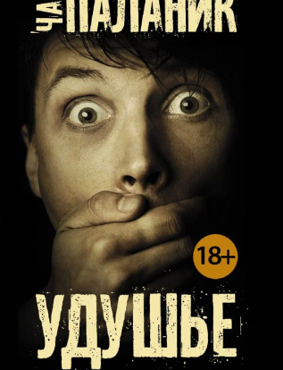

Удушье
АвторЧак Паланик
Языкрусский
Жанрыроман
Возрастные ограничения18+
Переплеттвердый
Цена350 р
Кто отдаст
Виталий

26.02.2023
После прочтения появились две мысли. Первая - перед нами типичный Чак
Паланик, по-прежнему удивляющий своими образами и поворотами сюжета. Как всегда жестко,
дерзко и
с черным юмором. Вторая - этого писателя лучше читать до двадцати. В более зрелом возрасте
вся
эта контркультура выглядит немного наигранной, полной юношеского максимализма. Но в целом
неплохо, но лучше бы эту книгу было прочитать лет десять назад)
Анна

12.01.2024
рекомендую многие его книги, а эту - тем более. слов нет, все
понравилось.правда, автор не для всех)из плюсов могу выделить атмосферу и поднятие
философских
тем( что есть в каждом его романе). практически каждое предложение мне хочется выписать и
подумать над ним!минус..наверное, все персонажи книг паланика имеют схожий характер в том
или
ином смысле. так что мужчина отсюда напоминал мне мужчину с «колыбельной». но у них разная
судьба и в целом не под копирку же написаны, так что не критично. читайте, не пожалеете.
Вера
02.01.2023
Чак Паланик практически стал легендой в своём жанре,его книги
невероятны,хочется читать одну за другой. В данной книге Паланик повествует историю
афериста,
который посещал рестораны, после приёма пищи разыгрывал приступы удушья и что было дальше?
платить за такое меню естественно не приходилось))